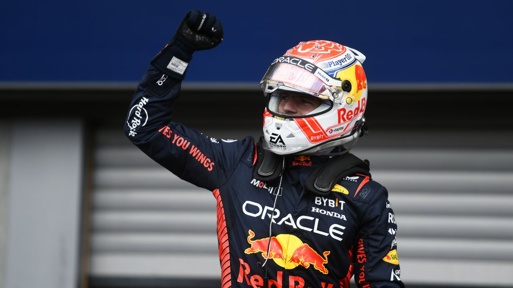

Posted by Iker Aguero on Saturday, August 5th 2023
There are undoubtedly a lot of great sports out there, but none of them - no even Football - can match the level of anxiety, thrill, excitment and passion of Formula 1
I consider myself to be one of the biggest F1 fans alive and today I'm going to tell why do I think there is nothing quite like F1 on the globe
Formula 1 is a racing series that takes place all arround the round the world between the months of February and December (2022 was an exception due to the FIFA World Cup also taking place in December). It's the highest level of racing you will find anywhere in the globe.
Formula stands for the set of regulations that all the teams have to comply with in order to compete in the series, meanwhile the number 1 is meant to denote that it's the top category of all the Formulas in the world.
F1 is made of two championships:
You can learn more on F1 Official Website
There are countless reasons for you to start watching F1. The main ones in my opinions are the following:
For you to enjoy F1 like I do, you can't just stick with watching the races on Sundays, you'll need to fully immerse yourself on the teams backgrounds, strategies and operations throughout the whole week, apart from watching pre and post race shows to get a full insight on the weekend. I mean, you probably can enjoy F1 without doing all of this, but for me this is what makes this sport like no other, the amount of insights and exciment we can get when there's no racing activity actually happening on track.
At the end of the day, I can guarantee that this is what will essentially make you watch a full race or season even if it's boring. You will be so invested in the enviroment of F1 that you'll not even care.